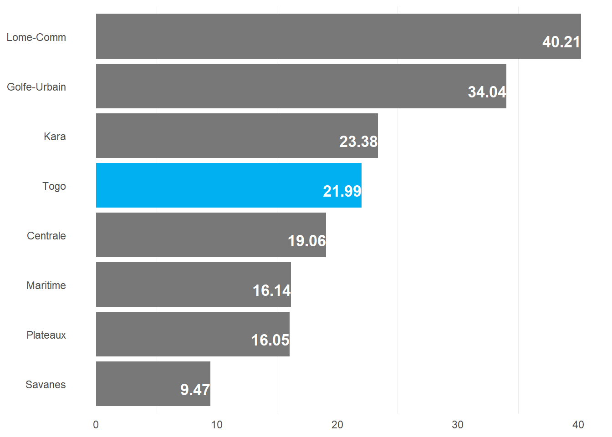
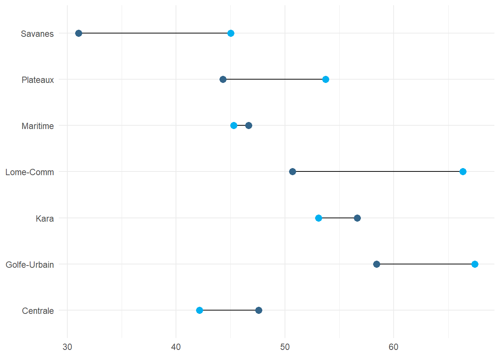
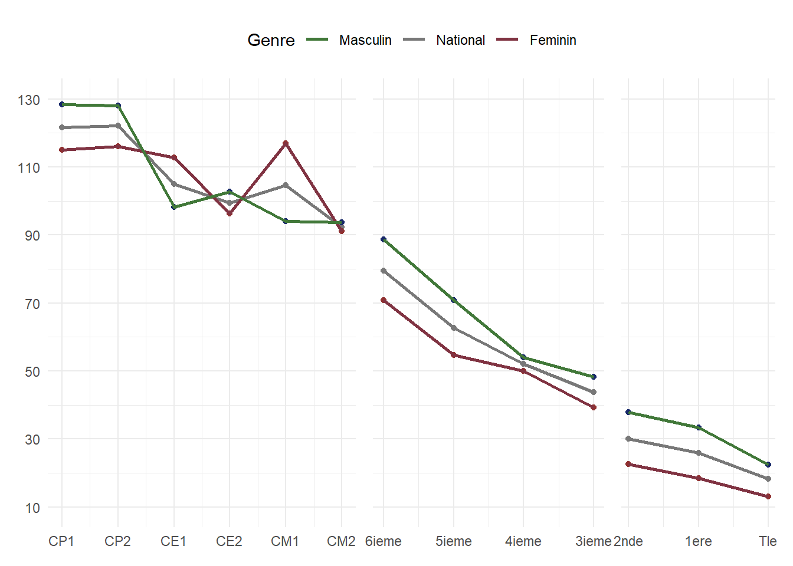

hl <- hl |>
mutate(
PAS_prim = if_else(age_school == 1,1,0),
PAS_col = if_else(age_school == 2,1,0),
PAS_lyc = if_else(age_school == 3,1,0),
ES_prim = if_else(ED9 == 1 & ED10A == 1,1,0),
ES_col = if_else(ED9 == 1 & ED10A == 2,1,0),
ES_lyc = if_else(ED9 == 1 & ED10A == 3,1,0),
ESAS_prim = if_else(age_school == 1 & ED9 == 1 & ED10A == 1,1,0),
ESAS_col = if_else(age_school == 2 & ED9 == 1 & ED10A == 2,1,0),
ESAS_lyc = if_else(age_school == 3 & ED9 == 1 & ED10A == 3,1,0),
ESASA_prim = if_else(age_school == 1 & ED9 == 1 & (ED10A == 1 | ED10A == 2),1,0),
ESASA_col = if_else(age_school == 2 & ED9 == 1 & (ED10A == 2 | ED10A == 3),1,0),
ESASA_lyc = if_else(age_school == 3 & ED9 == 1 & (ED10A == 3 | ED10A == 4 | ED10A == 4),1,0),
NAR = case_when(
age_school == 1 & ED9 == 1 & ED10A == 1 ~ 1,
age_school == 2 & ED9 == 1 & ED10A == 2 ~ 1,
age_school == 3 & ED9 == 1 & ED10A == 3 ~ 1,
.default = 0
)
)
hl_design <- hl %>%
as_survey_design(weights = hhweight)
indic_sco = function(numerateur1,numerateur2,numerateur3,denominateur,niveau,by,class){
hl_design |>
group_by({{by}}) |>
summarise(
'TBS_{niveau}' := survey_total({{numerateur1}},na.rm = TRUE)/survey_total({{denominateur}},na.rm = TRUE)*100,
'TNS_{niveau}' := survey_total({{numerateur2}},na.rm = TRUE)/survey_total({{denominateur}},na.rm = TRUE)*100,
'TNSA_{niveau}' := survey_total({{numerateur3}},na.rm = TRUE)/survey_total({{denominateur}},na.rm = TRUE)*100
) |>
mutate(class = {{class}},levels = {{by}}) |>
select(-contains("_se"),-1)
}
indic10 <- indic_sco(ES_prim,ESAS_prim,ESASA_prim,PAS_prim,"prim",0,"National")
indic11 <- indic_sco(ES_prim,ESAS_prim,ESASA_prim,PAS_prim,"prim",HL4,"Genre")
indic12 <- indic_sco(ES_prim,ESAS_prim,ESASA_prim,PAS_prim,"prim",HH6,"Urbain/Rural")
indic13 <- indic_sco(ES_prim,ESAS_prim,ESASA_prim,PAS_prim,"prim",HH7,"Region")
indic14 <- indic_sco(ES_prim,ESAS_prim,ESASA_prim,PAS_prim,"prim",windex5,"Richesse")
indic_prim = rbind(indic10,indic11,indic12,indic13,indic14)
indic20 <- indic_sco(ES_col,ESAS_col,ESASA_col,PAS_col,"col",0,"National")
indic21 <- indic_sco(ES_col,ESAS_col,ESASA_col,PAS_col,"col",HL4,"Genre")
indic22 <- indic_sco(ES_col,ESAS_col,ESASA_col,PAS_col,"col",HH6,"Urbain/Rural")
indic23 <- indic_sco(ES_col,ESAS_col,ESASA_col,PAS_col,"col",HH7,"Region")
indic24 <- indic_sco(ES_col,ESAS_col,ESASA_col,PAS_col,"col",windex5,"Richesse")
indic_sec1 = rbind(indic20,indic21,indic22,indic23,indic24)
indic30 <- indic_sco(ES_lyc,ESAS_lyc,ESASA_lyc,PAS_lyc,"lyc",0,"National")
indic31 <- indic_sco(ES_lyc,ESAS_lyc,ESASA_lyc,PAS_lyc,"lyc",HL4,"Genre")
indic32 <- indic_sco(ES_lyc,ESAS_lyc,ESASA_lyc,PAS_lyc,"lyc",HH6,"Urbain/Rural")
indic33 <- indic_sco(ES_lyc,ESAS_lyc,ESASA_lyc,PAS_lyc,"lyc",HH7,"Region")
indic34 <- indic_sco(ES_lyc,ESAS_lyc,ESASA_lyc,PAS_lyc,"lyc",windex5,"Richesse")
indic_sec2 = rbind(indic30,indic31,indic32,indic33,indic34)
df <- cbind(indic_prim |> select(-c(class,levels)),indic_sec1 |> select(-c(class,levels)),indic_sec2)1 Analyse de la capacité d’accueil du système et de la couverture scolaire
1.1 Analyse de la capacité d’accueil
Méthodologie
1.1.1 1. Le taux brut de scolarisation
En notant ES (respectivement PAS ) l’effectif des élèves scolarisés (respectivement la population d’enfant d’âge scolaire), on définit le Taux brut de scolarisation (TBS) sur un cycle particulier pour une année donnée par:
\[ TBS = \frac{ES}{PAS} \] Le Taux brut de scolarisation donne une idée de la proportion d’élèves qu’un pays donnée est capable de scolariser par rapport au nombre total d’enfant en âge d’être scolarisé.(le TBS est un indicateur de capacité d’accueil). Un TBS de 100% signifie que le pays est capable d’accueillir dans ses établissements tous les enfants en âge d’être scolarisé.
1.1.2 2. Le taux net de scolarisation
On définit de la même manière le Taux net de scolarisation (TNS)comme étant le rapport entre l’effectif des élèves scolarisés ayant l’officiel du cycle (6-11 ans pour le cas du Togo au primaire) sur la population d’enfant d’âge scolaire.
\[ TNS = \frac{ESAS}{PAS} \]
Le taux net de scolarisation rend compte des enfants en âge d’être à l’école et qui y sont effectivement. (le TNS est un indicateur de participation)
1.1.3 3. Le taux net de scolarisation ajusté
Ces deux taux pourraient être complétés par le taux net de scolarisation ajusté. Le TNSA mesure le pourcentage d’enfants d’un âge donné qui fréquentent un niveau d’enseignement compatible avec leur âge ou qui suivent un niveau d’enseignement supérieur. Le taux est dit « ajusté » car il inclut les deux groupes.
\[ TNSA = \frac{ESASA}{PAS} \]
1.1.4 Implémentation
La base hl permet de calculer la plupart des indicateurs de l’éducation. Pour les différents taux de scolarisation, on aura besoin de:
schagepour calculer les différents intervalles d’âge;ED9la fréquentation scolaire au moment de la collecteED10Ale niveau fréquenté au moment de l’enquête.
On calcule les différents effectifs ainsi:
- D’abord, On calcule le numérateur: par exemple pour le TBS du primaire, l’enfant fréquente au cours de l’année scolaire 2016-2017 (
ED9 == 1) et est au primaire (ED10A); - Ensuite, on calcule le dénominateur. Pour le TBS au primaire, l’enfant a l’âge d’être au primaire (
age_school == 1ou encoreschage>= 6 & schage <= 11); - Et enfin on fait la somme des enfants répondent au critère du numérateur et du numérateur. Le rapport de ces deux totaux donne le TBS du primaire (
TBS_prim = survey_total(ES_prim,na.rm = TRUE)/survey_total(PAS_prim,na.rm = TRUE)).
| Les indicateurs de couverture: TBS et TNS | |||||||||
|---|---|---|---|---|---|---|---|---|---|
| Calcul pour le primaire et le secondaire | |||||||||
Primaire (%)
|
Secondaire 1 (%)
|
Secondaire 2 (%)
|
|||||||
| TBS | TNS | TNSA | TBS | TNS | TNSA | TBS | TNS | TNSA | |
| National | |||||||||
| Togo | 120.73 | 86.18 | 91.09 | 89.95 | 49.61 | 53.02 | 55.27 | 21.99 | 23.67 |
| Genre | |||||||||
| Masculin | 121.33 | 86.72 | 91.61 | 99.13 | 51.85 | 55.62 | 65.19 | 24.40 | 26.54 |
| Feminin | 120.12 | 85.62 | 90.56 | 80.64 | 47.34 | 50.38 | 43.90 | 19.24 | 20.38 |
| Urbain/Rural | |||||||||
| Urbian | 119.85 | 88.82 | 96.67 | 103.09 | 61.28 | 67.79 | 76.88 | 33.14 | 36.66 |
| Rural | 121.22 | 84.75 | 88.06 | 81.51 | 42.11 | 43.52 | 37.52 | 12.84 | 13.00 |
| Region | |||||||||
| Maritime | 127.81 | 88.25 | 92.83 | 83.28 | 45.94 | 48.01 | 47.24 | 16.14 | 16.53 |
| Plateaux | 125.66 | 88.93 | 93.15 | 98.79 | 49.04 | 52.12 | 47.90 | 16.05 | 16.05 |
| Centrale | 126.99 | 90.71 | 93.40 | 88.72 | 44.74 | 46.96 | 51.12 | 19.06 | 19.06 |
| Kara | 106.68 | 79.11 | 83.53 | 91.54 | 54.73 | 57.81 | 58.05 | 23.38 | 24.43 |
| Savanes | 113.90 | 81.36 | 83.87 | 70.35 | 38.94 | 38.99 | 30.87 | 9.47 | 9.47 |
| Lome-Comm | 119.60 | 86.22 | 96.77 | 98.73 | 56.37 | 63.66 | 87.75 | 40.21 | 45.56 |
| Golfe-Urbain | 120.63 | 88.62 | 96.74 | 98.86 | 62.65 | 70.80 | 68.80 | 34.04 | 39.85 |
| Richesse | |||||||||
| plus pauvres | 117.24 | 79.92 | 81.17 | 59.30 | 30.86 | 30.98 | 23.36 | 7.24 | 7.24 |
| Second | 120.78 | 86.56 | 89.18 | 82.68 | 42.91 | 43.71 | 28.84 | 7.47 | 7.47 |
| Moyen | 126.13 | 89.57 | 94.98 | 101.09 | 50.81 | 52.69 | 45.96 | 15.88 | 16.14 |
| Quatrième | 122.52 | 89.70 | 97.19 | 105.40 | 60.84 | 66.21 | 73.50 | 26.45 | 28.74 |
| plus riches | 116.87 | 86.57 | 96.64 | 102.29 | 63.40 | 72.46 | 87.23 | 43.40 | 48.07 |
| SOURCE: MICS 2017 | Calcul de l’auteur TABLE: Komlan Samati |
|||||||||
Les tableaux ne sont pas généralement assez informatifs. Il est important de faire des représentation graphiques pour faire ressortir les resultats les plus importants. Par exemple pour ce tableau, on pourrait un graphique qui compare les taux net de scolarisation entre les différentes régions.


1.1.5 Les limites des taux de scolarisation
Les limites des taux de scolarisation sont de deux ordres:
- Ces taux surestiment la scolarisation car prenant en compte les redoublement;
- Ces taux prennent les entrées tardives (c’est le cas pour le taux brut de scolarisation)
Pour mieux appréhender la scolarisation, on a recours au profil de scolarisation.
1.2 Analyse de la couverture scolaire
Méthodologie
Le profil de scolarisation est la succession de taux d’accès aux différentes classes pour le cycle considéré. Le taux d’admission en première année constitue le point de départ du profil et le taux d’admission en dernière année la fin du profil. (NB: Ne pas confondre le taux d’admission en dernière année et le taux d’achèvement )
Le taux d’accès TA pour une classe j, à une année t est égal au rapport de l’effectif des nouveaux entrants NE et la population ayant l’âge officiel de fréquenter cette classe j, l’année t
\[ TA_{i,t} = \frac{NE_{j,t}}{PA_{i,t}} \]
1.2.1 Imputation
La démarche porte sur les étapes suivantes:
- Numérateur par exemple pour le CP2, L’enfant est scolarisé au primaire en 2016-2017 (
ED10A == 1), fréquente la classe de CP2 (ED10B == 2), qu’il soit nouveau dans la classe de CP2 (ED16A == 1 & ED16B == 1, en d’autre terme, il était au CP1 l’année précédente); - Dénominateur pour le CP2, l’enfant doit être agé de 7 ans (
schage==11)
acces <- function(niveauAn,classeAn,by){
if (classeAn < 2){
hl_design <- hl |>
mutate(
NE= ifelse(ED10A == {{niveauAn}} & ED10B == {{classeAn}} , 1,0),
PA = if_else(schage == {{classeAn}}+5,1,0)
) |>
as_survey_design(weights = hhweight)
} else{
hl_design <- hl |>
mutate(
NE = ifelse(ED10A == {{niveauAn}} & ED10B == {{classeAn}} & ED16A == {{niveauAn}} & ED16B == {{classeAn}}-1, 1,0),
PA = if_else(schage == {{classeAn}}+5,1,0)) |>
as_survey_design(weights = hhweight)
}
hl_design |>
group_by({{by}}) |>
summarise(
"TA_{classeAn}" := survey_total(NE,na.rm = TRUE)/survey_total(PA,na.rm = TRUE)*100
) |>
select(-contains("_se"),-1)
}
prim_ens = cbind(acces(1,1,0),acces(1,2,0),acces(1,3,0),acces(1,4,0),acces(1,5,0),acces(1,6,0)) |>
rownames_to_column("var") |>
mutate(var = if_else(var == 1,"Nationale",var))
prim_genre = cbind(acces(1,1,HL4),acces(1,2,HL4),acces(1,3,HL4),acces(1,4,HL4),acces(1,5,HL4),acces(1,6,HL4)) |>
rownames_to_column("var") |>
mutate(var = if_else(var == 1,"Masculin","Feminin"))
df_prim <- rbind(prim_ens,prim_genre)
profil_prim <- data.table::transpose(df_prim,keep.names = "Classe",make.names = "var") |>
mutate(Classe = case_when(
Classe == "TA_1" ~ "CP1",
Classe == "TA_2" ~ "CP2",
Classe == "TA_3" ~ "CE1",
Classe == "TA_4" ~ "CE2",
Classe == "TA_5" ~ "CM1",
Classe == "TA_6" ~ "CM2",
))
sec1_ens <- cbind(acces(2,1,0),acces(2,2,0),acces(2,3,0),acces(2,4,0)) |>
rownames_to_column("var") |>
mutate(var = if_else(var == 1,"Nationale",var))
sec1_genre <- cbind(acces(2,1,HL4),acces(2,2,HL4),acces(2,3,HL4),acces(2,4,HL4)) |>
rownames_to_column("var") |>
mutate(var = if_else(var == 1,"Masculin","Feminin"))
df_sec1 <- rbind(sec1_ens,sec1_genre)
profil_sec1 <- data.table::transpose(df_sec1,keep.names = "Classe",make.names = "var") |>
mutate(Classe = case_when(
Classe == "TA_1" ~ "6ieme",
Classe == "TA_2" ~ "5ieme",
Classe == "TA_3" ~ "4ieme",
Classe == "TA_4" ~ "3ieme"
))
sec2_ens <- cbind(acces(3,1,0),acces(3,2,0),acces(3,3,0)) |>
rownames_to_column("var") |>
mutate(var = if_else(var == 1,"Nationale",var))
sec2_genre <- cbind(acces(3,1,HL4),acces(3,2,HL4),acces(3,3,HL4)) |>
rownames_to_column("var") |>
mutate(var = if_else(var == 1,"Masculin","Feminin"))
df_sec2 <- rbind(sec2_ens,sec2_genre)
profil_sec2 <- data.table::transpose(df_sec2,keep.names = "Classe",make.names = "var") |>
mutate(Classe = case_when(
Classe == "TA_1" ~ "2nde",
Classe == "TA_2" ~ "1ere",
Classe == "TA_3" ~ "Tle"
))Une manière de mieux appréhender les profils de scolarisation est d’en faire une représentation graphique.
